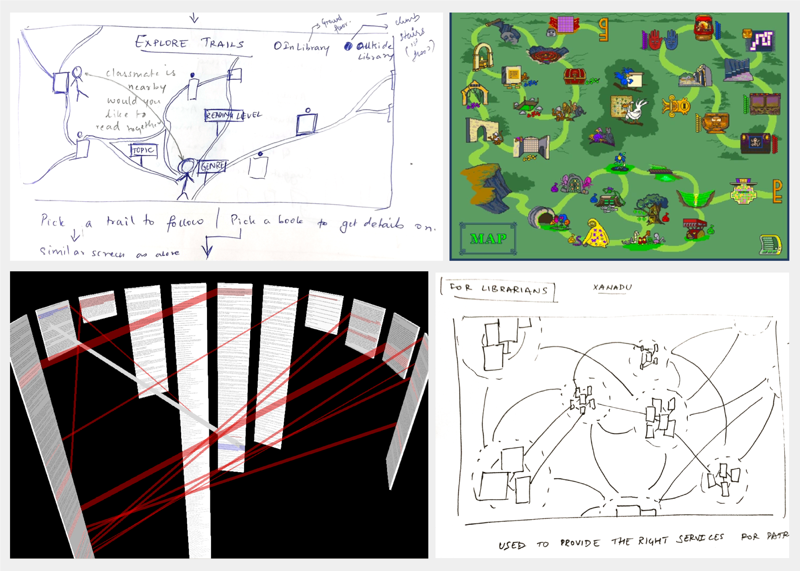
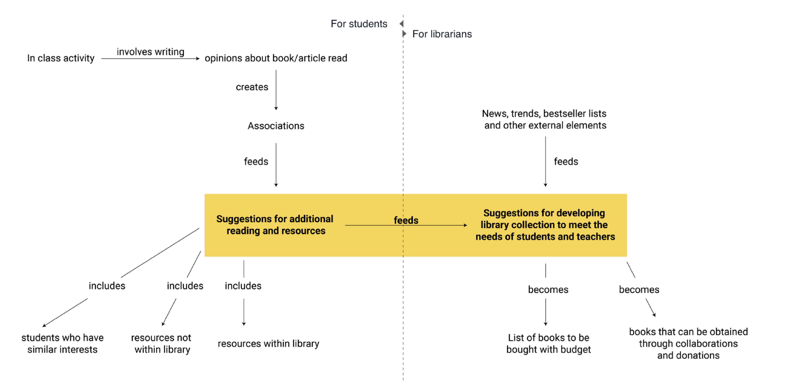
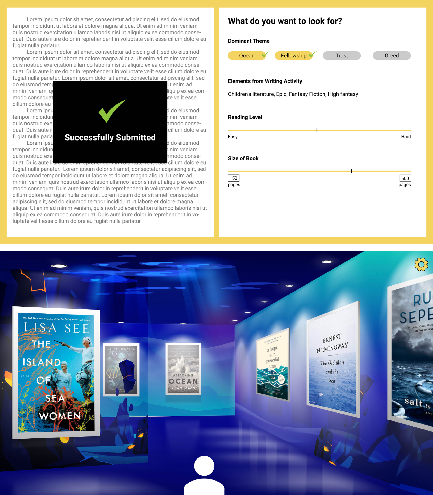
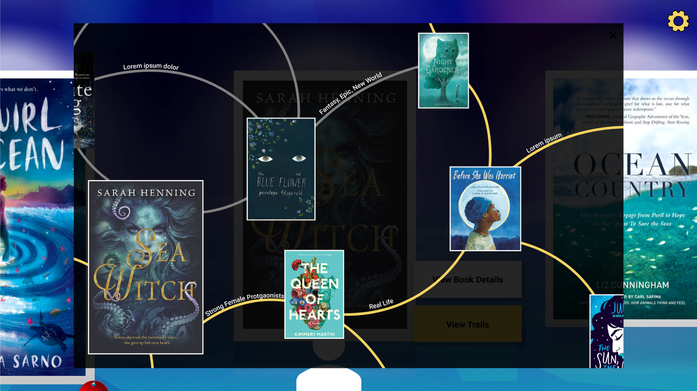
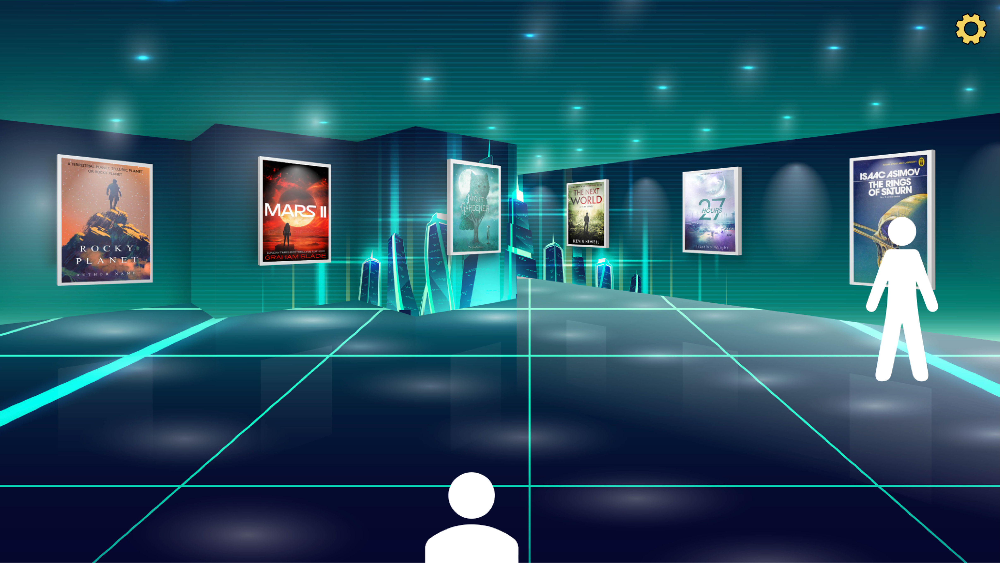
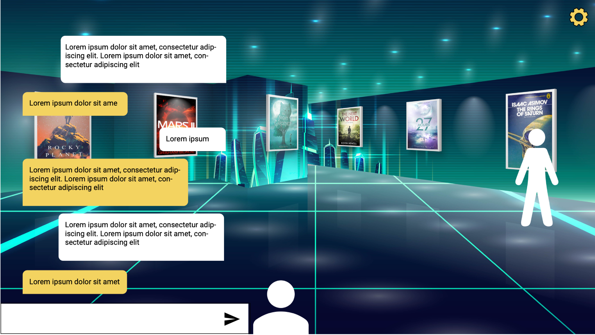
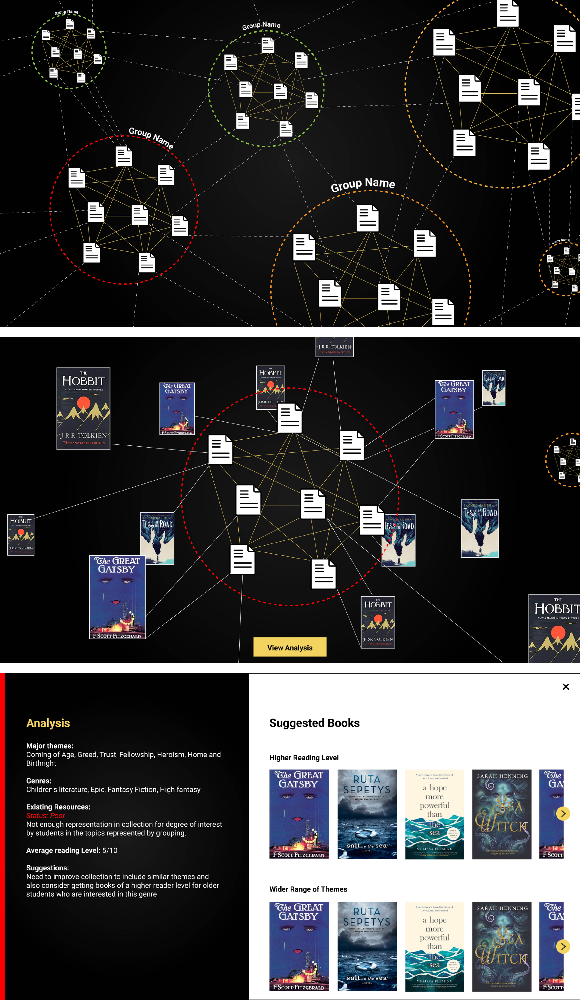

ui/ux design + library + book search
Goal: To create an experience that encourages students to explore and read
books
duration
4 weeks
solo project
research, ideation, and design concept
initial research
looking into activities and events that encourage reading.
My initial plan revolved around creating an activity in the library that would encourage
reading. I looked into existing case studies to better inform myself of what currently exists and where
opportunities lay to innovate.
insights from case studies
building social elements into reading.
Webnovel is an app that supports amateur authors. It is a forum in which the author and
reader are in close contact. This allows for discussion and events around the characters and plotlines
that could influence the direction of the story that traditional reading does not allow.
activity based library programs.
Growing by Reading is a library program developed by the Hippocampus Reading Foundation
in Bangalore, India. It aims to asses the reading level of children through activities and suggests the
best reading materials based on that. This is to ensure that children are not put off by reading due to
starting with books that are too hard or uninteresting for them.
current school library period structure has issues.
The library period in schools are structures such that students are allowed to pick a
book in the first five to ten minutes of class. The remainder is spent reading whatever they have
picked. Some issues with this:
1. Students may pick an uninteresting book that they have to read for the remainder of the class.
2. Many libraries have locked bookshelves that requires the librarians permission before a book can be
taken out.
3. The process of randomly selecting a book is overwhelming and uninspired.
4. Libraries may not be able to meet the needs of their readers because of the lack of budget and
understanding of the right resources necessary
problem identified
making use of existing activities and targetting book search.
1. How can I make students interested in exploring the library and what it has to
offer?
2. How can I ensure that they are more likely to pick a book that they enjoy?
3. How can I help librarians understand the needs of students to optimize resources to be obtained?
ideation
everything is deeply intertwingled - Ted Nelson.
Gaining inspiration from Ted Nelson’s Xanadu I sketched out some major elements of the
exerience.

design concept
The significant elements of the library class would include an activity through which the
librarian can gain an understanding of the students’ interests and reading level. This information would
be used to provide suggestions to reading resources they are more likely to enjoy. These suggestions
also help librarians identify where the library collection falls short of meeting the students’ needs.
The design will focus on how to provide suggestions and make use of them rather than the activity.

in-class activity results in better suggestions.
An activity designed and executed by the librarian helps the system understand the
reading level and interests of each student. Based on this information, a private digital space is
created for them to explore. This space contains works that match the students’ preferences. Students
can navigate the online space like they would a physical room by moving through the room using arrow
keys.

On seeing a particular book, they like students can choose to explore further with that
book as a focal point. This can help them conveniently find books they are more likely to enjoy.

Exploring the library through the trails can lead to public spaces that are
categorized either by genre or reading levels.

Social elements have been added to the exploration of the library. Moving around within
any public space in the digital library offers a chance to meet others who have similar tastes and
reading levels with whom a conversation can be started.

librarian view for easy analysis.
A 3-dimensional view of activity statistics and corresponding reading materials present
in the library provides an easy way to analyze potential areas for improvement quickly. Zooming in and
out offers more or less detail, respectively, so that better decisions can be made about improving the
library offerings.

conclusion
1. Interesting displays can engage students in exploring books online in a way that might
be impossible in the physical library space.
2. The experience allows students to move around and engage not just with books but also each other.
3. Fun online experiences and meetups within the library can help turn it into a hub that encourages
reading and critical thinking in students.
4. Librarians have a clearer picture of what their students need. This also enables librarians to work
within their given budget better.